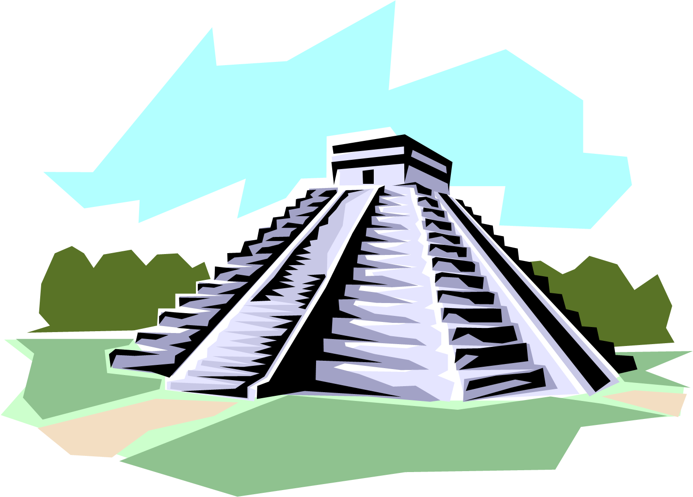
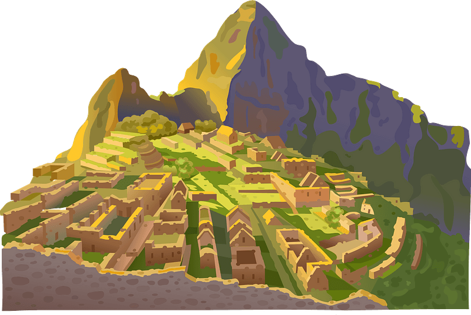
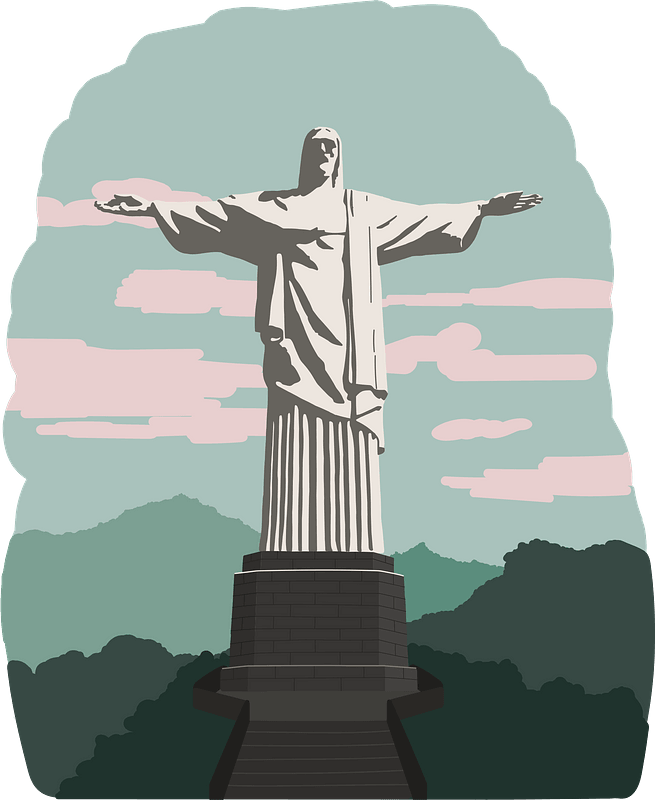
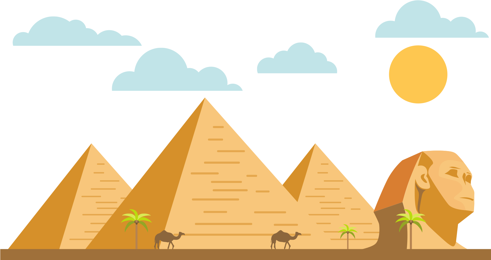
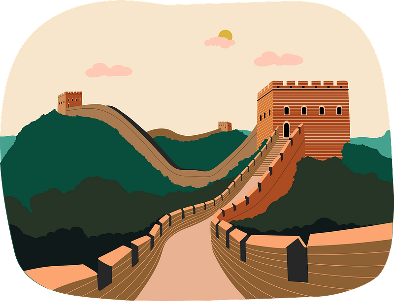
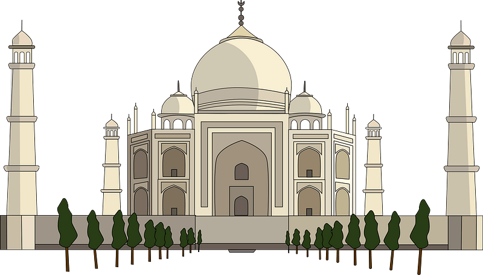

 Built by the Mayan people, the city of Chichen Itza is located in the Tinum Municipality of Yucatan State, Mexico. It was one of the largest cities built by the Mayans and has been there since roughly 600-900 AD. The meaning behind the city's name is “At the mouth of the well of the Itza”
 Located within the Urubamba Province, norwest of Cusco Region, Peru, Machu Picchu is “the most familiar icon of the Inca Empire;” also referred to as the “Lost City of the Incas” (“Machu Picchu”). The meaning of the name is roughly translated to “old mountain”
 The creation of this statue was a labor of love by Brazilian engineer Heitor da Silva Costa, French engineer Albert Caquote, Romanian sculptor Gheorghe Leonida, and French sculptor Paul Landowski. Located in Rio De Janeiro, Brazil, the statue was originally meant to be an ode to Princess Isabel, Brazil's regent from the mid 1800s; but was not approved to be built until years later due to political reasons
 Built in Regio III Isis et Serapis, Rome, Italy, the Colosseum is one of the largest
amphitheaters ever built and still holds that title today.
The building was originally used for events such as gladiator contests,
public gatherings, dramas, executions, and more
Built in Regio III Isis et Serapis, Rome, Italy, the Colosseum is one of the largest
amphitheaters ever built and still holds that title today.
The building was originally used for events such as gladiator contests,
public gatherings, dramas, executions, and more
 The Great Pyramid of Giza is the oldest of the ancient world's 7 wonders, built around 26 BC as Pharaoh Khufu's resting place. We only know of three chambers from within the pyramid that act as the base, the Queen's chamber, and the King's chamber.
 Built as a line of “protection against various nomadic groups from the Eurasian Steppe,” parts of the wall date as far back to 7 BC, and did not reach completion until centuries later as different Dynasties ruled over China (“Great Wall”). Due to its impressive structure, the wall had multiple uses ranging from long distance battle to monitoring Silk Road trade
 Located in Agra, Uttar Pradesh, India, the Taj Mahal was built to honor the Mughal Emperor Shah Jahans wife Mumtaz Mahal as a reminder of his love for her. The architecture of the mausoleumcontains a rich number of symbolism “to reflect natural beauty and divinity”